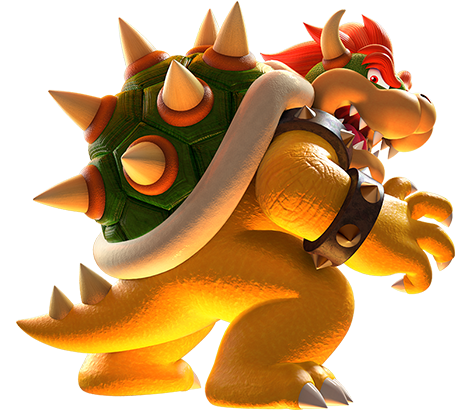
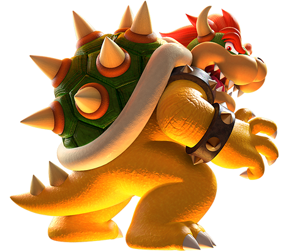

ROTEIRO
O roteiro do filme "Super Mario Bros." (2023) mistura aventura, comédia e fantasia, adaptando os personagens e elementos icônicos dos jogos de “Super Mario” em uma narrativa envolvente e cheia de ação. O filme é uma colaboração entre Illumination Entertainment, Universal Pictures e Nintendo, com direção de Aaron Horvath
teste

 
